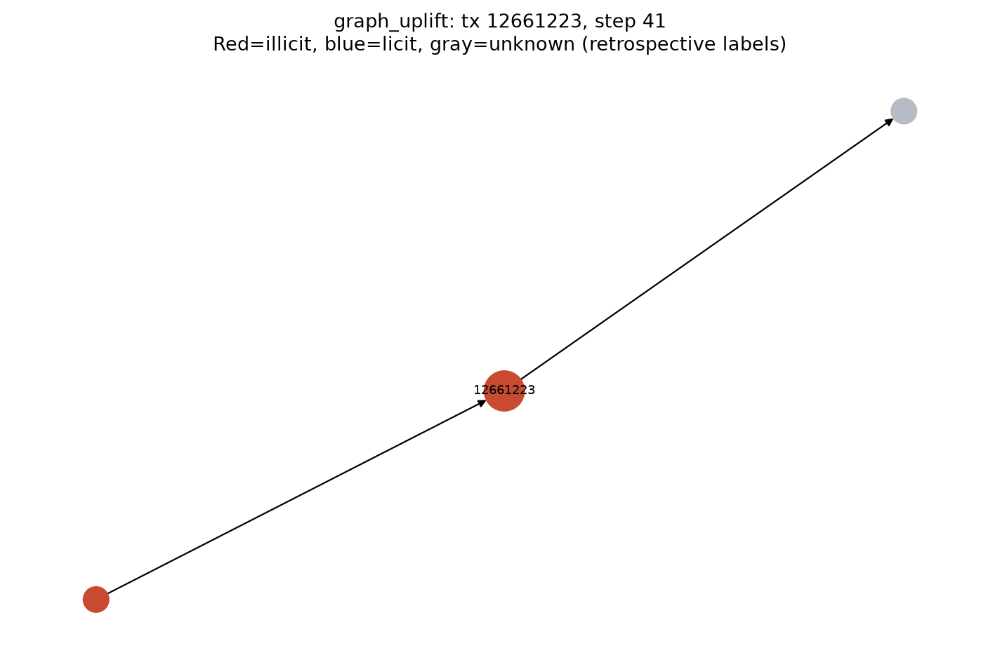

FEATURED RESEARCH · GRAPH MACHINE LEARNING
FraudGraph
Can a Bitcoin transaction look different once you see its network?
An independent research investigation using 203,769 Bitcoin transactions to compare transaction-only and graph-enhanced models, test analyst review limits, and examine what happens when performance changes over time.
Finding For named-feature XGBoost, test Average Precision increased from 0.4239 to 0.5240 with graph context. But later-period performance declined sharply—an important limitation, not a hidden result.